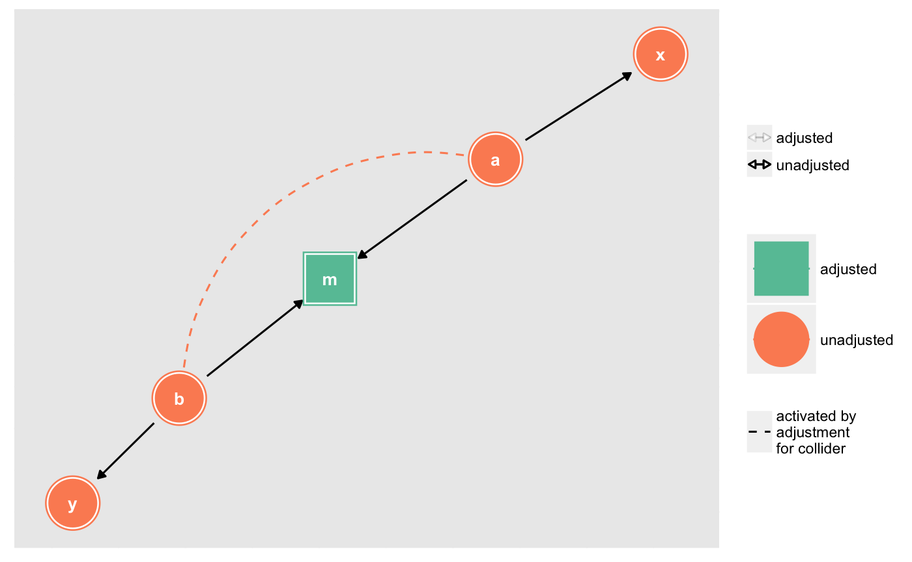

R/adjustment_sets.R
control_for.RdAdjust for variables and activate any biasing paths that result
control_for(.tdy_dag, var, as_factor = TRUE, ...) adjust_for(.tdy_dag, var, as_factor = TRUE, ...) ggdag_adjust(.tdy_dag, var = NULL, ..., node_size = 16, text_size = 3.88, label_size = text_size, text_col = "white", label_col = text_col, node = TRUE, stylized = FALSE, text = TRUE, use_labels = NULL, collider_lines = TRUE)
| .tdy_dag | input graph, an object of class |
|---|---|
| var | a character vector, the variable(s) to adjust for. |
| as_factor | logical. Should the |
| ... | additional arguments passed to |
| node_size | size of DAG node |
| text_size | size of DAG text |
| label_size | size of label text |
| text_col | color of DAG text |
| label_col | color of label text |
| node | logical. Should nodes be included in the DAG? |
| stylized | logical. Should DAG nodes be stylized? If so, use
|
| text | logical. Should text be included in the DAG? |
| use_labels | a string. Variable to use for
|
| collider_lines | logical. Should the plot show paths activated by adjusting for a collider? |
a tidy_dagitty with a adjusted column for adjusted
variables, as well as any biasing paths that arise, or a ggplot
#> # A DAG with 5 nodes and 4 edges #> # #> # Paths opened by conditioning on a collider: a <-> b #> # #> # A tibble: 8 x 10 #> name x y direction to xend yend circular collider_line adjusted #> <chr> <dbl> <dbl> <fct> <chr> <dbl> <dbl> <lgl> <lgl> <fct> #> 1 a 16.3 15.6 -> m 17.4 14.6 FALSE FALSE unadjust… #> 2 a 16.3 15.6 -> x 15.4 16.5 FALSE FALSE unadjust… #> 3 b 18.4 13.6 -> m 17.4 14.6 FALSE FALSE unadjust… #> 4 b 18.4 13.6 -> y 19.4 12.8 FALSE FALSE unadjust… #> 5 m 17.4 14.6 NA NA NA NA FALSE FALSE adjusted #> 6 x 15.4 16.5 NA NA NA NA FALSE FALSE unadjust… #> 7 y 19.4 12.8 NA NA NA NA FALSE FALSE unadjust… #> 8 a 16.3 15.6 <-> b 18.4 13.6 NA TRUE unadjust…ggdag_adjust(dag, var = "m")